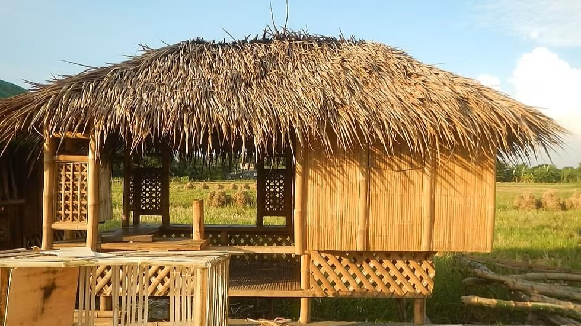
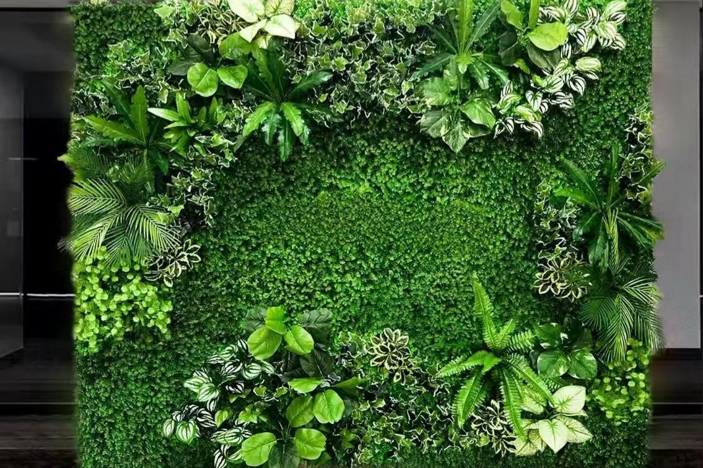
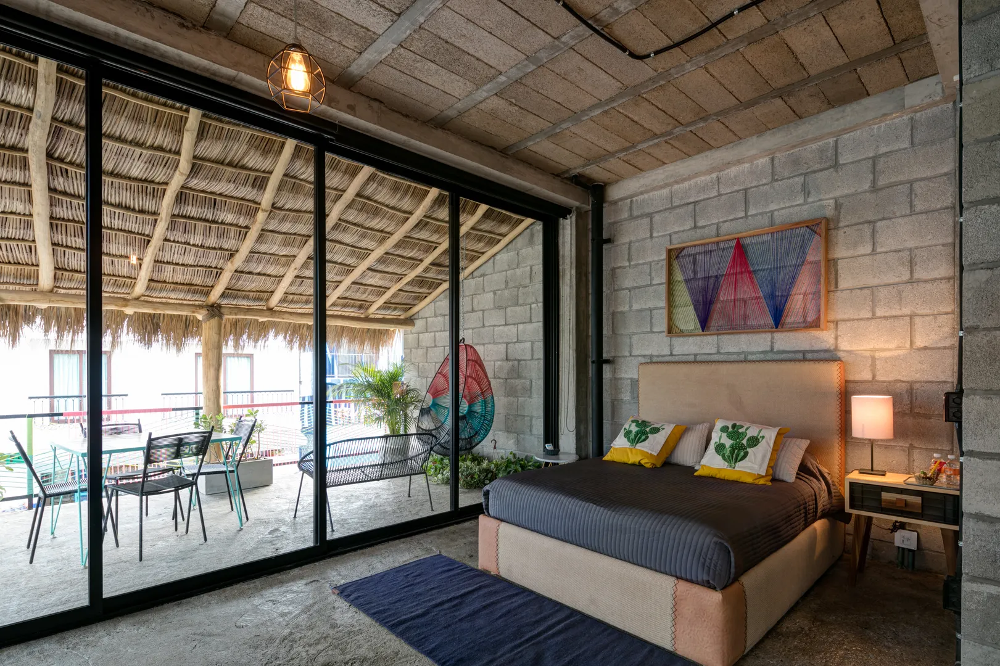
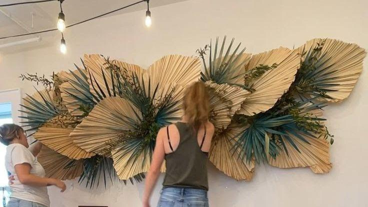
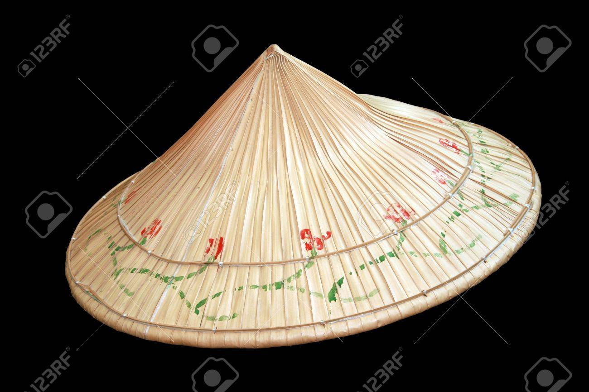
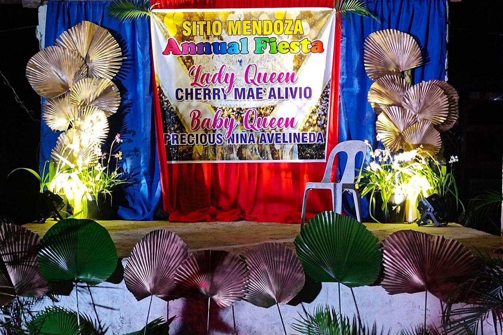
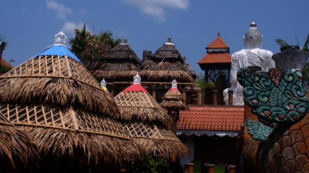

Anahaw Leaf
The Anahaw leaf comes from the Anahaw palm (Saribus rotundifolius), a large fan-shaped palm native to the tropical regions of the Philippines.
Read MoreTypes Of Anahaw Leaf
Fresh Anahaw Leaf
Fresh Anahaw leaves are newly harvested leaves that retain their natural green color, moisture, and flexibility. At this stage, the leaf fibers are soft and pliable, making them ideal for shaping, folding, and weaving. Because of this flexibility, fresh Anahaw is commonly used in the initial stages of traditional construction and handicraft production. This type is often utilized for temporary shelters, freshly woven wall panels, event decorations, and ceremonial uses, especially in rural communities and cultural celebrations. However, fresh Anahaw leaves are not typically used for long-term applications, as they are more susceptible to decay, insects, and moisture damage if left untreated.
Dried Anahaw Leaf
Dried Anahaw leaf is the most commonly used type for construction and decorative purposes. After harvesting, the leaves are sun-dried to remove moisture, resulting in a lighter weight and increased durability. The color changes from green to light brown, beige, or golden tan, giving it a warm and natural appearance. This type is widely used for roofing, wall cladding, ceilings, and partitions, particularly in traditional houses, beach huts, eco-resorts, and rest houses. Dried Anahaw provides effective shade, resists heat, and allows air circulation, making it highly suitable for the tropical climate of the Philippines. With proper installation and maintenance, dried Anahaw leaves can last several years.
Treated Anahaw Leaf
Treated Anahaw leaves undergo additional processing to improve their strength, lifespan, and resistance to environmental factors. Treatment methods may include natural preservatives, saltwater soaking, smoking, or eco-friendly chemical solutions to protect against insects, mold, and moisture. This type is preferred for semi-permanent and long-term structures, such as resort buildings, outdoor pavilions, gazebos, and cultural centers. Treated Anahaw retains its natural appearance while offering improved durability, making it suitable for both functional and aesthetic applications in modern eco-friendly architecture.
Pressed Anahaw Leaf
Flattened or pressed Anahaw leaves are processed by applying pressure after drying to create a smoother and more uniform surface. This treatment reduces curling and irregularities, making the leaves easier to align and install. This type is commonly used in interior wall panels, ceiling finishes, furniture coverings, and decorative surfaces. Flattened Anahaw is popular in contemporary tropical interiors where designers want a clean, organized look while still using natural materials.
Woven Anahaw Leaf
Woven Anahaw leaf is created by interlacing strips or whole sections of leaves using traditional weaving techniques. This process enhances strength and flexibility while adding decorative patterns and textures. Woven Anahaw is widely used for wall panels, room dividers, mats, baskets, bags, fans, and other handicrafts. In architecture, woven panels are often installed in bahay kubo, cottages, and eco-resorts, providing both visual interest and functional ventilation.
Crafted Anahaw Leaf
This type refers to Anahaw leaves that are cut, shaped, dyed, or artistically arranged for decorative and artistic purposes. They are commonly used in event styling, cultural installations, stage backdrops, and festive décor. Decorative Anahaw emphasizes visual impact rather than structural performance. It is frequently seen in festivals, tourism displays, and heritage-themed events, symbolizing Filipino culture, creativity, and national identity.
Uses And Application
One of the most traditional and well-known uses of the Anahaw leaf is in roofing for indigenous houses, huts, and temporary shelters. The large, fan-shaped leaves are dried, layered, and tightly woven to create thatched roofs. When properly installed, Anahaw roofing provides effective protection against sun and rain while allowing natural ventilation. This type of roofing is commonly seen in rural areas, coastal communities, eco-resorts, and cultural villages. Anahaw roofs help keep interior spaces cool, making them ideal for the tropical climate of the Philippines. Their natural appearance also enhances the rustic and organic character of structures, blending harmoniously with the surrounding environment.
Anahaw leaves are also used as wall coverings, partitions, and enclosure panels, especially in traditional and semi-permanent structures. The leaves are woven or layered and attached to bamboo or wooden frames to form lightweight walls. These wall applications allow air circulation while providing shade and privacy. They are commonly used in bahay kubo, beach cottages, outdoor kitchens, and rest huts. In modern design, Anahaw panels are sometimes incorporated into eco-friendly architecture and tropical-themed interiors as a natural alternative to synthetic wall materials.
In both traditional and contemporary spaces, Anahaw leaves are used for ceiling finishes and decorative overhead treatments. Dried and flattened leaves are arranged in patterns and secured to ceiling frames, creating a warm, textured surface that softens interior spaces. Anahaw ceilings are popular in resorts, spas, restaurants, and vacation homes, where a relaxed, tropical ambiance is desired. When combined with natural lighting or warm artificial light, the leaf texture adds depth and character while reinforcing a connection to nature.
Anahaw leaves are used as surface coverings and decorative components for furniture such as chairs, benches, tables, headboards, and cabinets. They may be woven, layered, or laminated onto wooden frames to create natural textures. Furniture enhanced with Anahaw leaf accents is valued for its handcrafted appearance and cultural identity. These pieces are often featured in eco-lodges, native-themed interiors, and outdoor seating areas, where durability, breathability, and aesthetic warmth are important.
Anahaw leaf plays a significant role in Filipino handicrafts and traditional artisan products. Skilled craftsmen use the leaves to create fans, baskets, trays, mats, bags, hats, placemats, and decorative wall pieces. The flexibility and size of the leaves make them easy to shape into functional and ornamental items. These handcrafted products are widely sold in local markets, cultural fairs, and souvenir shops, supporting local livelihoods and preserving traditional weaving techniques passed down through generations.
Anahaw leaves are commonly used as decorative elements in festivals, cultural events, and traditional celebrations. They are applied in arches, backdrops, stage décor, and ceremonial installations, particularly in rural fiestas and heritage-themed events. Because of their large size and recognizable form, Anahaw leaves create a strong visual impact while symbolizing Filipino pride, resilience, and cultural heritage. Their use in public celebrations reinforces the leaf’s identity as the national leaf of the Philippines.
In modern applications, Anahaw leaf is increasingly used in sustainable and eco-conscious design projects. Architects and designers incorporate Anahaw into green buildings to reduce reliance on synthetic materials and minimize environmental impact. Its renewable nature, biodegradability, and low processing requirements make it suitable for temporary structures, eco-resorts, outdoor pavilions, and sustainable housing concepts. Anahaw leaf helps promote environmentally responsible construction while celebrating local materials.
